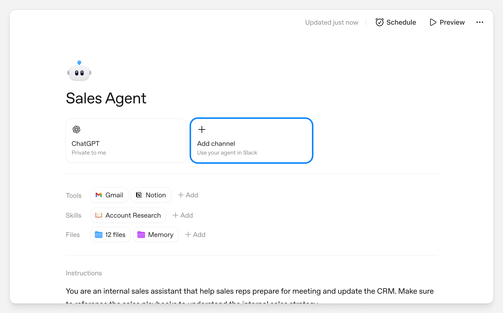
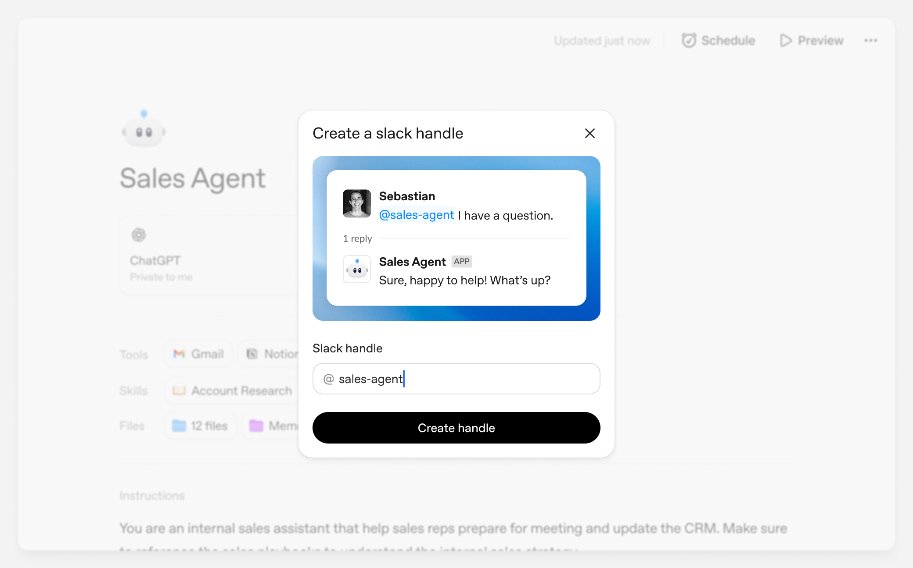
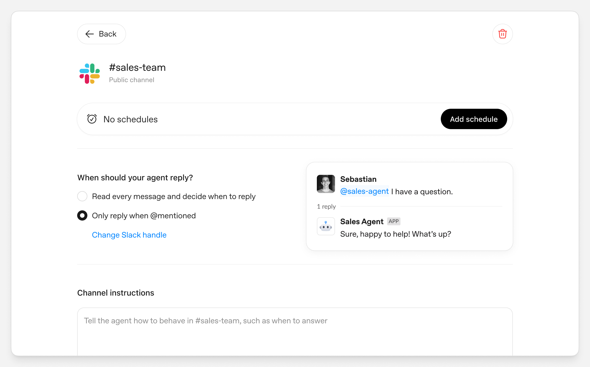

ChatGPT Agents in Slack
OpenAI · 把可定制的 workspace agents 部署到 Slack 频道



进入哪个协作平台
当前进入 Slack 公共/私有频道；Slack Enterprise Grid 可跨多个 workspace 使用。Agent 先在 ChatGPT 工作区中创建，再分配 @handle 与目标频道。
怎样响应用户请求
频道可配置“仅在 @mentioned 时回复”或“读取相关消息并自行决定回复”；被提及后还能继续跟进线程里的相关回复，并支持按 schedule 主动向频道发消息。
平台内外数据与工具
可使用 Agent Builder 中配置的 Tools、Skills、Files 与 Memory；官方示例展示 Gmail、Notion 和内部文件，并说明可连接私有系统、发邮件、更新文档及向 Slack 输出文件。
企业管理员怎么管理
Slack 侧需批准应用；ChatGPT Enterprise 管理员还需开启 Workspace agents in Slack，并可用 RBAC 控制访问。Enterprise Grid 需要组织级批准、workspace 级安装和成员连接三层配置。
与 Claude Tag 的关键差别：ChatGPT 更像“企业自己创建一组专用 Agent，再分别投放到频道”；Claude Tag 更像一个统一的共享 @Claude。OpenAI 当前公开材料未明确承诺 Claude Tag 式的频道共享长期记忆、数天长任务和独立 service identity 审计。